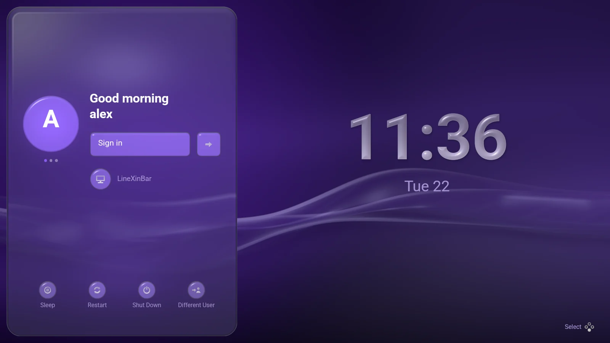
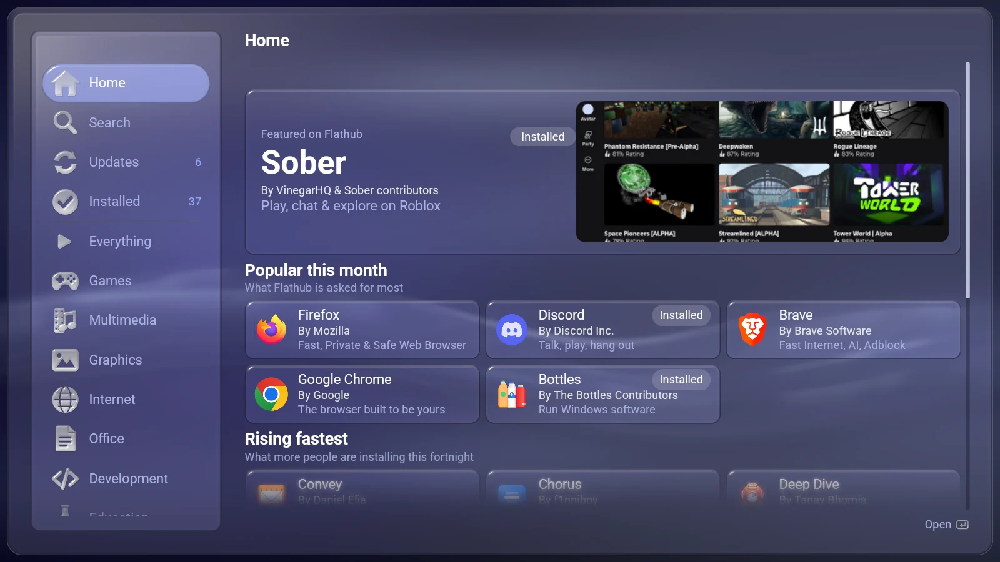
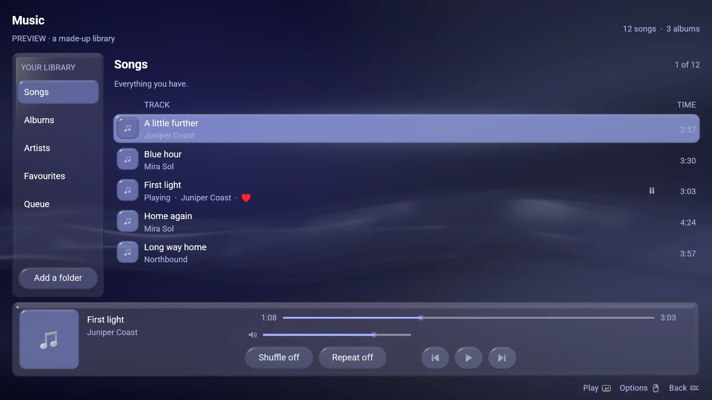
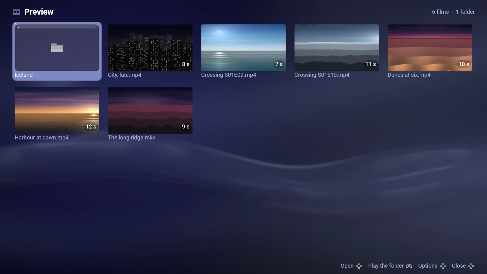
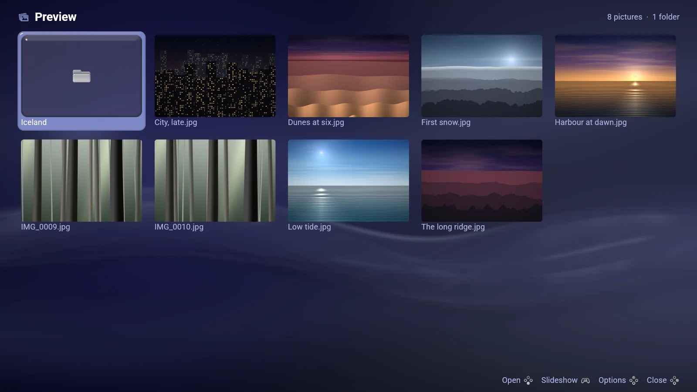
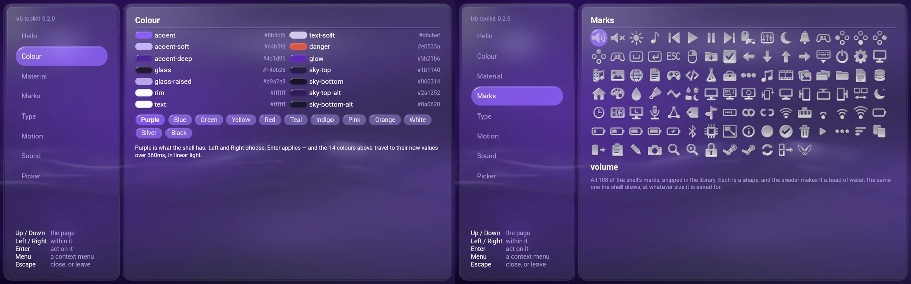

Семейство LineXinBar: экран входа, магазин приложений и медиаприложения
Экран входа
Console Experience Desktop Manager — экран входа, рассчитанный на контроллер, для LineXinBar и для обычных сеансов рабочего стола Linux.
Он рисует обои, палитру и стекло LineXinBar, и им можно управлять контроллером, клавиатурой или указателем, причём ни один из них не отдельный режим. Он запускает любой сеанс Wayland на машине — LineXinBar, Plasma, что угодно ещё — и передаёт LineXinBar запись, благодаря которой обои продолжаются в тот же миг, так что вход выглядит одной непрерывной картинкой, а не двумя программами, сменяющими друг друга. Он говорит на десяти языках оболочки и следует вашему акцентному цвету и частицам.

Пока не готов быть единственным менеджером дисплея машины — попробуйте его со свободного VT или в режиме предпросмотра, который никогда не запускает сеанс.
 Software Hub
Software Hub
DistriBumpy, показываемый как Software Hub, — магазин Flatpak, которым управляют контроллером.
- Открывается на главной странице с тем, что сам Flathub считает достойным внимания, — самое востребованное, быстрее всех набирающее популярность, только что опубликованное и только что пересобранное — и появляется даже без сети.
- Полки, совпадающие с колонками оболочки, так что найденное оказывается там, где вы будете его искать.
- Говорит, во что на самом деле обойдётся установка, прежде чем вы нажмёте, — загрузка и место на диске, с учётом каждой среды выполнения, которую она потянет за собой.
- Устанавливает, обновляет и удаляет с прогрессом, который можно остановить, и убирает среды выполнения, которые больше ничему не нужны.

 Музыка
Музыка
SongOnSole, показываемый как Музыка, — музыкальная библиотека и плеер, которые открывает полка Музыки на панели.
Строка внизу — это одновременно и то, что играет, и способ это играть, на каждой странице. Песня открывается из строки, на которой её нажали, и её обложка вырастает в страницу «Сейчас играет». Шесть порядков сортировки, очередь, которая играет в том порядке, в каком её собрали, и всё работает и на маленьком экране портативной приставки, и на телевизоре.

 Видео
Видео
Videonsole, показываемый как Видео, — обозреватель и плеер фильмов, сделанный для контроллера.
Фильм открывается из карточки, на которой его нажали, и возвращается в неё. Играющему фильму принадлежит весь экран; нажмите что угодно, и элементы управления поднимутся, а через четыре секунды опустятся снова. Он помнит, где просмотр остановился, находит субтитры внутри фильма или рядом с ним и декодирует на видеокарте, когда машина это умеет.

 Изображения
Изображения
Imagonsole, показываемый как Изображения, — просмотрщик фотографий, которым управляют контроллером.
Фотография открывается из своей карточки в полном разрешении, а соседние уже прочитаны, так что листание папки никогда не ждёт. A поднимается по лесенке ступеней масштаба; триггер или колесо масштабируют плавно. Направление сдвигает картинку там, где она больше экрана, и переходит к следующей там, где нет.

lxb-toolkit
Собственный интерфейс оболочки — её цвета, стекло, движение, шрифт, знаки и звуки, — упакованный в библиотеку, чтобы приложение можно было построить из того же материала и поставить рядом с ней.
Четыре приложения выше построены на ней. lxb-new my-player даёт вам готовое к сборке приложение Wayland на Rust, C или Python: одна функция, которая говорит, что на странице, управление клавиатурой, указателем и любым контроллером машины — и ни одной строки, где назывались бы цвет, радиус или длительность. Приложения toolkit — обычные программы Wayland, так что они работают в GNOME или Plasma так же охотно, как в LineXinBar.
lxb_app::App::new("com.example.hello", "Hello World").run(|page| {
page.head("launch", "Hello, world");
if page.button("Hello World!") {
println!("clicked");
}
})
Одна версия
LineXinBar и шесть его родственников выходят вместе, под одним номером версии — сегодня это 0.9.3, — так что установленное читается по одному номеру, а не по семи, которые расходятся.
Там, где их нет ни в одном репозитории дистрибутива, Настройки › Обновления обновляют все семь из их собственных выпусков на GitHub.